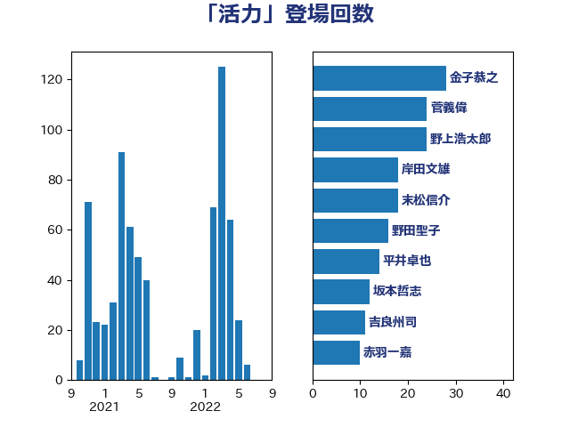

単語「活力」

| 金子恭之 | 自由民主党 | 28 回 |
| 菅義偉 | 自由民主党 | 24 回 |
| 野上浩太郎 | 自由民主党 | 24 回 |
| 岸田文雄 | 自由民主党 | 18 回 |
| 末松信介 | 自由民主党 | 18 回 |
| 野田聖子 | 自由民主党 | 16 回 |
| 平井卓也 | 自由民主党 | 14 回 |
| 坂本哲志 | 自由民主党 | 12 回 |
| 吉良州司 | 無所属 | 11 回 |
| 赤羽一嘉 | 公明党 | 10 回 |
| 平沢勝栄 | 自由民主党 | 9 回 |
| 斉藤鉄夫 | 公明党 | 9 回 |
| 梶山弘志 | 自由民主党 | 9 回 |
| 盛山正仁 | 自由民主党 | 9 回 |
| 平木大作 | 公明党 | 8 回 |
| 萩生田光一 | 自由民主党 | 8 回 |
| あかま二郎 | 自由民主党 | 6 回 |
| 平林晃 | 公明党 | 6 回 |
| 茂木敏充 | 自由民主党 | 6 回 |
| 藤田文武 | 日本維新の会 | 6 回 |
| 櫻井周 | 立憲民主党 | 5 回 |
| 武田良太 | 自由民主党 | 5 回 |
| 河野太郎 | 自由民主党 | 5 回 |
| 田村憲久 | 自由民主党 | 5 回 |
| 若宮健嗣 | 自由民主党 | 5 回 |
| 井上信治 | 自由民主党 | 4 回 |
| 小沼巧 | 立憲民主党 | 4 回 |
| 岩渕友 | 日本共産党 | 4 回 |
| 本庄知史 | 立憲民主党 | 4 回 |
| 柴田巧 | 日本維新の会 | 4 回 |
| 武見敬三 | 自由民主党 | 4 回 |
| 上川陽子 | 自由民主党 | 3 回 |
| 中川正春 | 立憲民主党 | 3 回 |
| 井上英孝 | 日本維新の会 | 3 回 |
| 住吉寛紀 | 日本維新の会 | 3 回 |
| 吉川赳 | 無所属 | 3 回 |
| 室井邦彦 | 日本維新の会 | 3 回 |
| 宮路拓馬 | 自由民主党 | 3 回 |
| 川田龍平 | 立憲民主党 | 3 回 |
| 橋本岳 | 自由民主党 | 3 回 |
| 浮島智子 | 公明党 | 3 回 |
| 渡辺猛之 | 自由民主党 | 3 回 |
| 熊野正士 | 公明党 | 3 回 |
| 片山大介 | 日本維新の会 | 3 回 |
| 牧山ひろえ | 立憲民主党 | 3 回 |
| 田畑裕明 | 自由民主党 | 3 回 |
| 舟山康江 | 国民民主党 | 3 回 |
| 若林健太 | 自由民主党 | 3 回 |
| 西銘恒三郎 | 自由民主党 | 3 回 |
| 足立康史 | 日本維新の会 | 3 回 |
| 鈴木俊一 | 自由民主党 | 3 回 |
| 須藤元気 | 無所属 | 3 回 |
| 高橋千鶴子 | 日本共産党 | 3 回 |
| 鳩山二郎 | 自由民主党 | 3 回 |
| おおつき紅葉 | 立憲民主党 | 2 回 |
| 下村博文 | 自由民主党 | 2 回 |
| 世耕弘成 | 自由民主党 | 2 回 |
| 中西祐介 | 自由民主党 | 2 回 |
| 中野洋昌 | 公明党 | 2 回 |
| 伊藤岳 | 日本共産党 | 2 回 |
| 堂故茂 | 自由民主党 | 2 回 |
| 宮崎政久 | 自由民主党 | 2 回 |
| 宮崎雅夫 | 自由民主党 | 2 回 |
| 小山展弘 | 立憲民主党 | 2 回 |
| 山口那津男 | 公明党 | 2 回 |
| 有村治子 | 自由民主党 | 2 回 |
| 杉尾秀哉 | 立憲民主党 | 2 回 |
| 森山浩行 | 立憲民主党 | 2 回 |
| 橋本聖子 | 無所属 | 2 回 |
| 浅田均 | 日本維新の会 | 2 回 |
| 玄葉光一郎 | 立憲民主党 | 2 回 |
| 玉木雄一郎 | 国民民主党 | 2 回 |
| 田嶋要 | 立憲民主党 | 2 回 |
| 田所嘉徳 | 自由民主党 | 2 回 |
| 磯崎仁彦 | 自由民主党 | 2 回 |
| 神田憲次 | 自由民主党 | 2 回 |
| 福田達夫 | 自由民主党 | 2 回 |
| 秋本真利 | 自由民主党 | 2 回 |
| 紙智子 | 日本共産党 | 2 回 |
| 美延映夫 | 日本維新の会 | 2 回 |
| 菊田真紀子 | 立憲民主党 | 2 回 |
| 西村康稔 | 自由民主党 | 2 回 |
| 角田秀穂 | 公明党 | 2 回 |
| 谷公一 | 自由民主党 | 2 回 |
| 遠藤利明 | 自由民主党 | 2 回 |
| 階猛 | 立憲民主党 | 2 回 |
| 高木啓 | 自由民主党 | 2 回 |
| 高階恵美子 | 自由民主党 | 2 回 |
| たがや亮 | れいわ新選組 | 1 回 |
| 三ッ林裕巳 | 自由民主党 | 1 回 |
| 上野通子 | 自由民主党 | 1 回 |
| 中川宏昌 | 公明党 | 1 回 |
| 中村裕之 | 自由民主党 | 1 回 |
| 丹羽秀樹 | 自由民主党 | 1 回 |
| 亀岡偉民 | 自由民主党 | 1 回 |
| 今枝宗一郎 | 自由民主党 | 1 回 |
| 冨樫博之 | 自由民主党 | 1 回 |
| 加藤勝信 | 自由民主党 | 1 回 |
| 加藤竜祥 | 自由民主党 | 1 回 |
| 務台俊介 | 自由民主党 | 1 回 |
| 北神圭朗 | 無所属 | 1 回 |
| 古屋範子 | 公明党 | 1 回 |
| 古川禎久 | 自由民主党 | 1 回 |
| 吉川ゆうみ | 自由民主党 | 1 回 |
| 吉田統彦 | 立憲民主党 | 1 回 |
| 和田政宗 | 自由民主党 | 1 回 |
| 嘉田由紀子 | 無所属 | 1 回 |
| 堤かなめ | 立憲民主党 | 1 回 |
| 大口善徳 | 公明党 | 1 回 |
| 大島敦 | 立憲民主党 | 1 回 |
| 大野敬太郎 | 自由民主党 | 1 回 |
| 太田房江 | 自由民主党 | 1 回 |
| 宮本周司 | 自由民主党 | 1 回 |
| 宮本岳志 | 日本共産党 | 1 回 |
| 宮本徹 | 日本共産党 | 1 回 |
| 小宮山泰子 | 立憲民主党 | 1 回 |
| 小森卓郎 | 自由民主党 | 1 回 |
| 小熊慎司 | 立憲民主党 | 1 回 |
| 山口壯 | 自由民主党 | 1 回 |
| 山岡達丸 | 立憲民主党 | 1 回 |
| 山添拓 | 日本共産党 | 1 回 |
| 山谷えり子 | 自由民主党 | 1 回 |
| 岡本あき子 | 立憲民主党 | 1 回 |
| 岡本三成 | 公明党 | 1 回 |
| 岩屋毅 | 自由民主党 | 1 回 |
| 岸真紀子 | 立憲民主党 | 1 回 |
| 川合孝典 | 国民民主党 | 1 回 |
| 市村浩一郎 | 日本維新の会 | 1 回 |
| 手塚仁雄 | 立憲民主党 | 1 回 |
| 斎藤洋明 | 自由民主党 | 1 回 |
| 新妻秀規 | 公明党 | 1 回 |
| 木原誠二 | 自由民主党 | 1 回 |
| 末松義規 | 立憲民主党 | 1 回 |
| 本田顕子 | 自由民主党 | 1 回 |
| 杉久武 | 公明党 | 1 回 |
| 東国幹 | 自由民主党 | 1 回 |
| 松山政司 | 自由民主党 | 1 回 |
| 松沢成文 | 日本維新の会 | 1 回 |
| 梅村みずほ | 日本維新の会 | 1 回 |
| 横山信一 | 公明党 | 1 回 |
| 橘慶一郎 | 自由民主党 | 1 回 |
| 武部新 | 自由民主党 | 1 回 |
| 池下卓 | 日本維新の会 | 1 回 |
| 池畑浩太朗 | 日本維新の会 | 1 回 |
| 沢田良 | 日本維新の会 | 1 回 |
| 泉健太 | 立憲民主党 | 1 回 |
| 浅野哲 | 国民民主党 | 1 回 |
| 浜口誠 | 国民民主党 | 1 回 |
| 浜野喜史 | 国民民主党 | 1 回 |
| 深澤陽一 | 自由民主党 | 1 回 |
| 滝波宏文 | 自由民主党 | 1 回 |
| 片山さつき | 自由民主党 | 1 回 |
| 田中健 | 国民民主党 | 1 回 |
| 田島麻衣子 | 立憲民主党 | 1 回 |
| 田村まみ | 国民民主党 | 1 回 |
| 田村智子 | 日本共産党 | 1 回 |
| 田村貴昭 | 日本共産党 | 1 回 |
| 石井啓一 | 公明党 | 1 回 |
| 石川大我 | 立憲民主党 | 1 回 |
| 石川昭政 | 自由民主党 | 1 回 |
| 石川香織 | 立憲民主党 | 1 回 |
| 福山哲郎 | 立憲民主党 | 1 回 |
| 福田昭夫 | 立憲民主党 | 1 回 |
| 稲津久 | 公明党 | 1 回 |
| 竹谷とし子 | 公明党 | 1 回 |
| 笠井亮 | 日本共産党 | 1 回 |
| 笠浩史 | 無所属 | 1 回 |
| 笹川博義 | 自由民主党 | 1 回 |
| 篠原孝 | 立憲民主党 | 1 回 |
| 船橋利実 | 自由民主党 | 1 回 |
| 藤川政人 | 自由民主党 | 1 回 |
| 西田昌司 | 自由民主党 | 1 回 |
| 赤澤亮正 | 自由民主党 | 1 回 |
| 越智隆雄 | 自由民主党 | 1 回 |
| 長友慎治 | 国民民主党 | 1 回 |
| 長坂康正 | 自由民主党 | 1 回 |
| 長妻昭 | 立憲民主党 | 1 回 |
| 阿部司 | 日本維新の会 | 1 回 |
| 青木一彦 | 自由民主党 | 1 回 |
| 青木愛 | 立憲民主党 | 1 回 |
| 青柳仁士 | 日本維新の会 | 1 回 |
| 音喜多駿 | 日本維新の会 | 1 回 |
| 高木かおり | 日本維新の会 | 1 回 |
| 高橋光男 | 公明党 | 1 回 |
| 高野光二郎 | 自由民主党 | 1 回 |
| 鰐淵洋子 | 公明党 | 1 回 |
| 麻生太郎 | 自由民主党 | 1 回 |